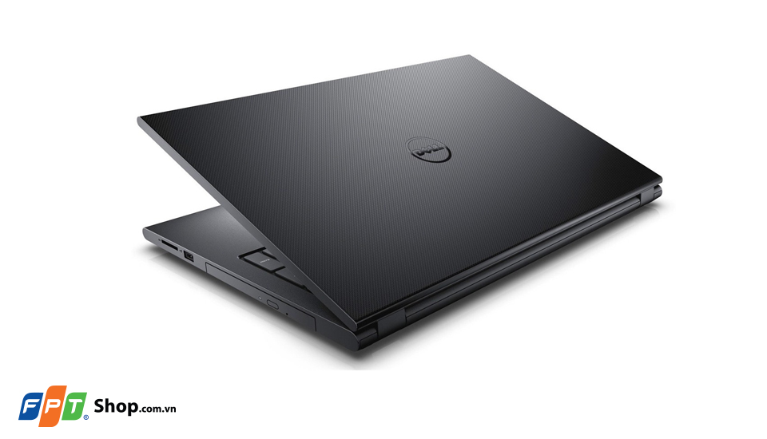
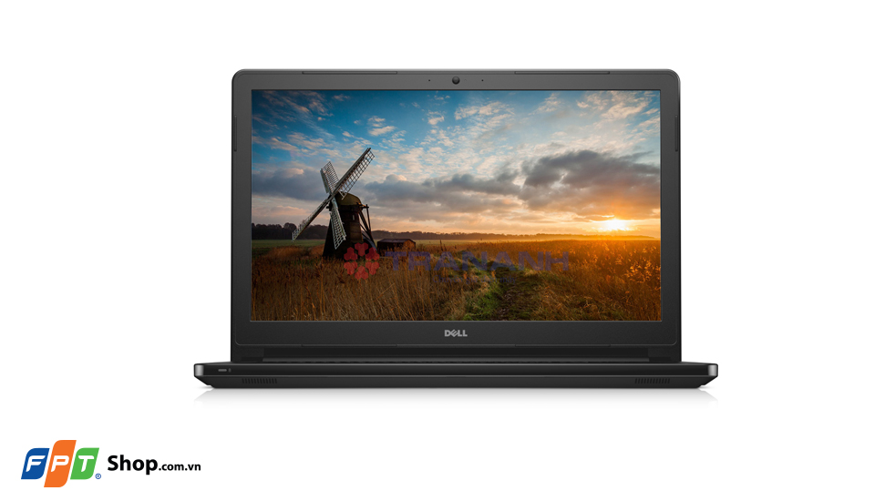
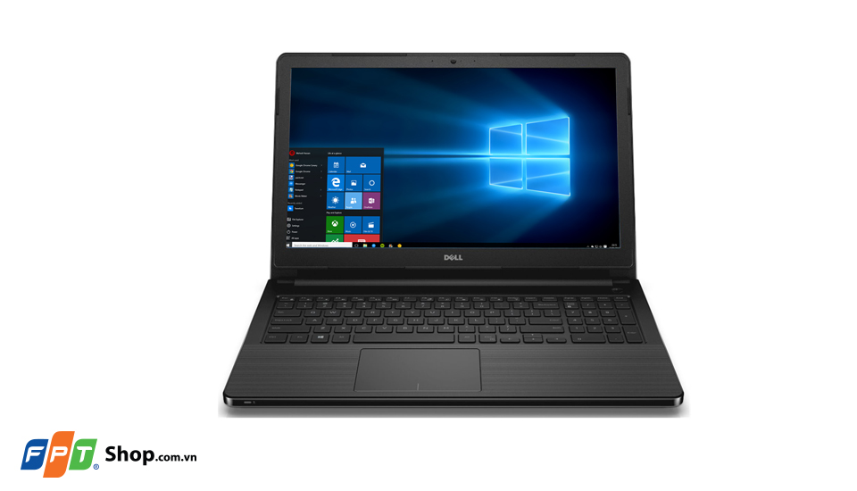
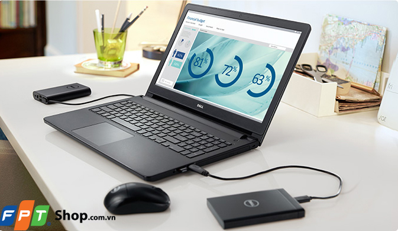
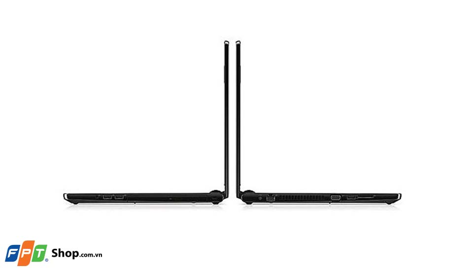

Dell Vostro V3559 thuộc dòng laptop phổ thông nhưng trang bị cấu hình mạnh mẽ và nổi bật với dung lượng RAM được tích hợp lên đến 8GB, đi kèm ổ cứng 1TB. Hơn nữa, Dell Vostro V3559 sở hữu chip U thế hệ mới nhất mang để khả năng xử lý vượt trội các tác vụ phức tạp.
Thiết kế cứng cáp
Dell Vostro V3559 mang phong cách thiết kế đặc trưng của những thế hệ tiền nhiệm, với các góc cạnh vuông vức cùng bộ khung chắc chắn tạo nên vẻ cứng cáp và hiện đại. Máy được bao bọc bởi lớp vỏ nhựa cứng cáp được làm nhám giúp bạn dễ dàng cầm nắm cũng như vệ sinh máy, đồng thời lớp vỏ nhám này còn có khả năng chống bám vân tay, giữ cho máy luôn sáng đẹp như mới. Thêm nữa, tổng thể gọn nhẹ giúp cho Dell Vostro V3559 có tính di động cao, thuận tiện cho người dùng mang theo khi di chuyển.
Màn hình 15.6 inches
Màn hình của laptop Dell Vostro V3559 có kích thước 15.6 inchs độ phân giải HD 1366x768 pixels giúp hình ảnh hiển thị sắc nét, màu sắc hài hòa với độ sáng cao và góc nhìn rộng. Đặc biệt là khả năng chống chói tuyệt vời giúp bạn có thể sử dụng máy ngay cả trong điều kiện ánh sáng mạnh. Dù bạn làm việc, xem phim, chơi game… màn hình này đều sẽ khiến bạn hài lòng.
Âm thanh
Dell Vostro V3559 được trang bị kênh âm thanh 2.0 và được tích hợp công nghệ MaxxAudio tiên tiến cho chất lượng âm thanh tuyệt hảo. Mọi tiếng động phát ra từ máy đều to, rõ ràng và chân thực, đặc biệt là không bị rè hay méo tiếng ngay cả khi bạn bật với mức âm thanh lớn nhất. Một màn hình sáng đẹp kết hợp thêm công nghệ âm thanh sống động, V3459 sẽ mang đến cho bạn không gian giải trí đúng nghĩa.
Cấu hình khủng
Dell V3559 Bộ vi xử lý Core i7 thuộc thế hệ chip Skylake mới nhất của Intel, mang đến tốc độ xử lý nhanh chóng và khả năng tiết kiệm điện hiệu quả cho Dell Vostro 3459. Dung lượng RAM 8GB giúp máy thực thi đa nhiệm mượt mà, máy có thể chạy nhiều chương trình cùng một lúc mà không lo máy bị giật lag. Đặc biệt được thích hợp card đồ họa VGA rời R5 M315 2GB cho phép người dùng trải nghiệm các game 3D yêu cầu cấu hình cao và xem những bộ phim Full HD sắc nét. Ngoài ra, Dell V3559 còn có ổ cứng HDD dung lượng 1 TB mang đến cho bạn không gian thoải mái để lưu trữ dữ liệu, phim, ảnh cũng như cài đặt game, ứng dụng cần thiết để luôn sẵn sàng cho công việc và giải trí.
Đầy đủ kết nối cơ bản
Laptop Dell Vostro V3559 được trang bị đầy đủ các kết nối cơ bản bao gồm cổng USB 2.0, cổng giao tiếp VGA, jack cắm tai nghe 3.5mm thông dụng và đặc biệt là cổng USB 3.0 cho tốc độ truyền tải nhanh gấp 10 lần. Bên cạnh đó là kết nối LAN RJ-45, Wifi 802.11b/g/n cho bạn thoải mái truy cập internet để lướt web, làm việc hay xem phim online… rất thuận tiện trong cả công việc và giải trí.